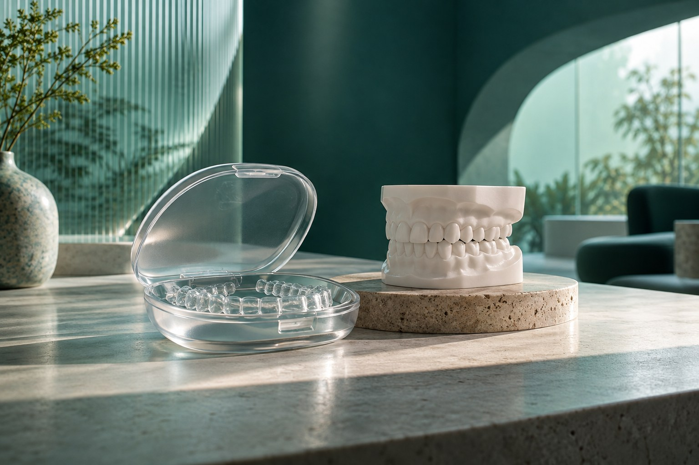
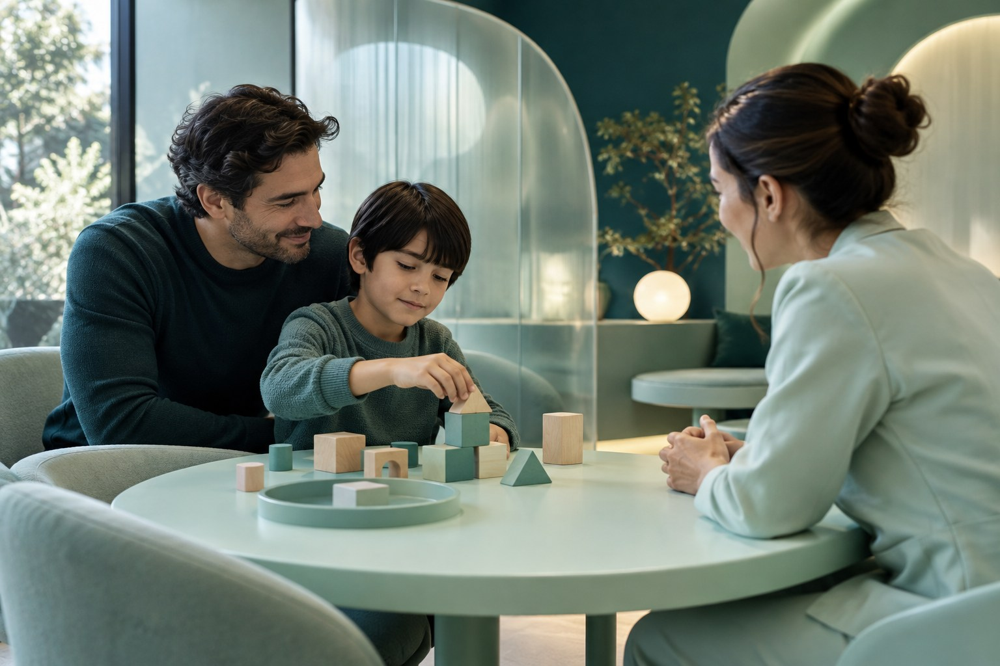

Diferentes áreas. Um olhar para você.
Explore os assuntos e veja o que conversar em uma avaliação.
Encontre seu caminho.
Conheça as áreas. A indicação de um cuidado depende de avaliação profissional.
Área de cuidado ·01
Prevenção e rotina
Atenção à saúde bucal e aos cuidados que fazem parte do seu dia.
Explorar o cuidado
Área de cuidado ·02
Ortodontia
Alinhamento e mordida compreendidos a partir da avaliação individual.
Explorar o cuidado
Área de cuidado ·03
Cuidado na infância
Um encontro para a criança e sua família conhecerem o cuidado.
Explorar o cuidadoO que acontece no primeiro encontro?
A proposta demonstrada começa com uma conversa sobre o que você procura, seguida da avaliação e da explicação dos próximos passos. O protocolo real deve ser confirmado com a clínica.
Continuar neste assuntoPreciso saber qual cuidado procurar?
Você pode começar descrevendo sua dúvida. A avaliação profissional ajuda a organizar as possibilidades; não é necessário escolher um tratamento pelo site.
Continuar neste assuntoComo confirmar valores e condições?
A equipe da clínica deverá informar valores, formas de pagamento e condições antes da contratação. Este catálogo não apresenta preços fictícios.
Continuar neste assunto